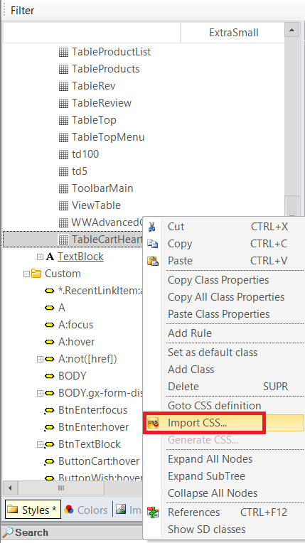
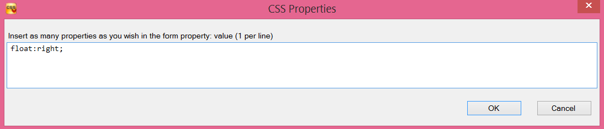
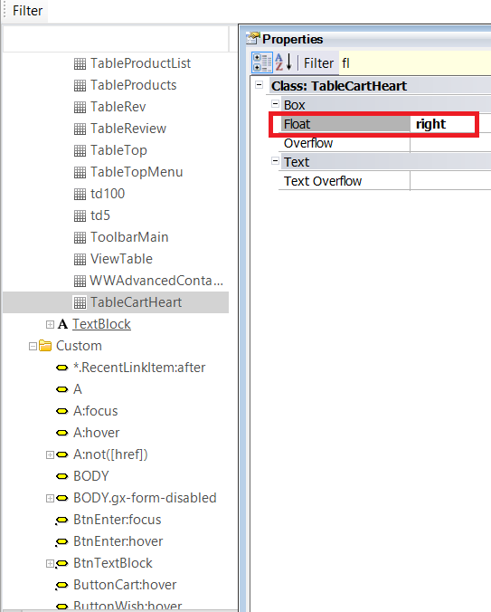

The import CSS option - that is contextual to any node of the Theme object - allows including pure CSS to the corresponding class. It's useful to bring the changes suggested by the web designer to the GeneXus Theme, in an agile way. ExampleConsider a class named "TableCartHeart" defined in the "Flat" Theme under the "Table" predefined class. By right-clicking on the "TableCartHeart" class, you can select the import CSS option:  Afterwards, a dialog is opened where the CSS has to be included:  The CSS definition previously entered is automatically added to the class:  See Also
|
| Backlinks | |
| Import and Generate CSS | Theme Editor class menu options |